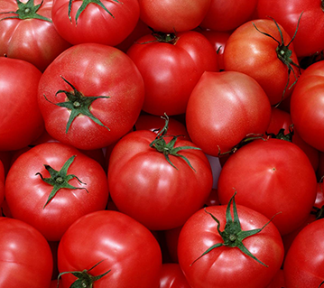

白沙镇处在江津区西南部，由于阳光照射长江江畔沙粒呈现白色得名。东汉末年建场，北宋《元丰九域志》曾载名。明神宗万历九年（1581）设水驿。清宣统二年（1910）置镇，民国时设第三区署，1949年后设第五区。1951年至1956年曾为江津县治。1957年至今为白沙镇。
白沙镇是万里长江上游的国家级第一深水良港，更是黔北地区及江津西部的经济、文化、商贸中心和交通枢纽。幅员面积238平方公里，总人口15万人，2012年主城区人口近10万余人。是重庆市第一人口大镇及重庆市重点发展的中等城市。素有“天府名镇”、“川东文化重镇”之美称和“小香港”之盛誉。2010年，获住房和城乡建设部、国家文物局授予第五批“中国历史文化名镇”荣誉称号。2013年12月，江津白沙被纳入全国经济发达镇行政管理体制改革试点，是重庆首个试点镇。2012年，被列入全国第三批改革发展小城镇。白沙镇依托白沙工业园，以科学发展观贯穿全镇发展改革试点工作的各个环节，着力采取以下措施，把白沙建设成为建设成为风貌独具、特色鲜明、设施完善、环境优越、功能齐全、辐射明显、产业发达、经济繁荣、镇风文明、和谐宜居的现代文明中国历史文化名镇和宜居宜业的长江上游中等城市。白沙镇所辖的苟洲半岛也是千古贤臣文种的故乡。
